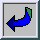
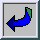

This section describes the hierarchical execution profiler. This
profiler is based on ideas from gprof described in
Graham et
al., 1982. The profiler consists of two parts: the
information-gathering component built into the kernel,164There
are two implementations; one based on setitimer() using the SIGPROF
signal and one using Windows Multi Media (MM) timers. On other systems
the profiler is not provided. and a presentation component
which is defined in the library(statistics) library. The
latter can be hooked, which is used by the XPCE module
library(swi/pce_profile) to provide an interactive
graphical frontend for the results.
This module provides a simple frontend on the execution profiler with
a hook to the GUI visualiser for profiling results defined in
library(swi/pce_profile).
once(Goal) under the execution profiler. If the (xpce)
GUI is enabled this predicate is hooked by library(swi/pce_profile)
and results are presented in a gui that enables navigating the call tree
and jump to predicate implementations. Without the GUI, a simple textual
report is generated. Defined options are:
cpu or wall time. The default is CPU
time.
true (all ports), false
(call port only) or classic (all with some errors).
Accomodates space/accuracy tradeoff building call tree.
true (default false), show cumulative
output in a textual report.
true (default false), show cumulative
output in a textual report.
summary:Dict
true, false or classic
list_of(Relative)
list_of(Relative)
Relative is a term of the shape below that represents a caller or callee. Future versions are likely to use a dict instead.
node(PredicateIndicator, CycleID, Ticks, TicksSiblings,
Calls, Redos, Exits)
nodes key.
Browsing the annotated call-tree as described in section 4.42.3 itself is not very attractive. Therefore, the results are combined per predicate, collecting all callers and callees as well as the propagation of time and activations in both directions. Figure 4 illustrates this. The central yellowish line is the‘current’predicate with counts for time spent in the predicate (`Self’), time spent in its children (`Siblings’), activations through the call and redo ports. Above that are the callers. Here, the two time fields indicate how much time is spent serving each of the callers. The columns sum to the time in the yellowish line. The caller <recursive> is the number of recursive calls. Below the yellowish lines are the callees, with the time spent in the callee itself for serving the current predicate and the time spent in the callees of the callee ('Siblings’), so the whole time-block adds up to the‘Siblings’field of the current predicate. The‘Access’fields show how many times the current predicate accesses each of the callees.
The predicates have a menu that allows changing the view of the detail window to the given caller or callee, showing the documentation (if it is a built-in) and/or jumping to the source.
The statistics shown in the report field of figure 4 show the following information:
SIGPROF is
1/100 second. This number must be sufficiently large to get reliable
timing figures. The Time menu allows viewing time as samples,
relative time or absolute time.
While the program executes under the profiler, the system builds a dynamic call-tree. It does this using three hooks from the kernel: one that starts a new goal (profCall), one that tells the system which goal is resumed after an exit (profExit) and one that tells the system which goal is resumed after a fail (i.e., which goal is used to retry (profRedo)). The profCall() function finds or creates the subnode for the argument predicate below the current node, increments the call-count of this link and returns the sub-node which is recorded in the Prolog stack-frame. Choice-points are marked with the current profiling node. profExit() and profRedo() pass the profiling node where execution resumes.
Just using the above algorithm would create a much too big tree due to recursion. For this reason the system performs detection of recursion. In the simplest case, recursive procedures increment the‘recursive’count on the current node. Mutual recursion, however, is not easily detected. For example, call/1 can call a predicate that uses call/1 itself. This can be viewed as a recursive invocation, but this is generally not desirable. Recursion is currently assumed if the same predicate with the same parent appears higher in the call-graph. Early experience with some non-trivial programs are promising.
The last part of the profiler collects statistics on the CPU time
used in each node. On systems providing setitimer() with
SIGPROF, it‘ticks’the current node of the
call-tree each time the timer fires. On Windows, a MM-timer in a
separate thread checks 100 times per second how much time is spent in
the profiled thread and adds this to the current node. See section
4.42.3.1 for details.
Profiling in the Windows version is similar, but as profiling is a statistical process it is good to be aware of the implementation165We hereby acknowledge Lionel Fourquaux, who suggested the design described here after a newsnet enquiry. for proper interpretation of the results.
Windows does not provide timers that fire asynchronously, frequent and proportional to the CPU time used by the process. Windows does provide multi-media timers that can run at high frequency. Such timers, however, run in a separate thread of execution and they are fired on the wall clock rather than the amount of CPU time used. The profiler installs such a timer running, for saving CPU time, rather inaccurately at about 100 Hz. Each time it is fired, it determines the CPU time in milliseconds used by Prolog since the last time it was fired. If this value is non-zero, active predicates are incremented with this value.